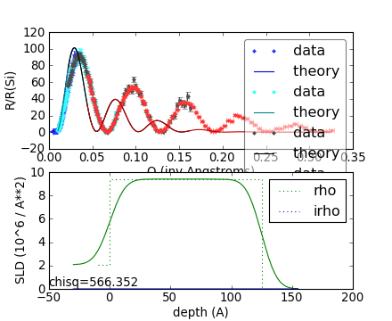
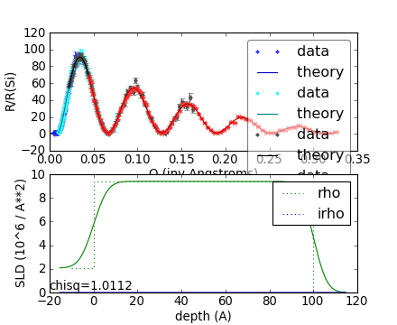

Performing a fit¶
Now that we know how to define a sample and load data, we can learn how to perform a fit on the data. This is shown in nifilm-fit.py:
We use the usual sample definition, except we set the thickness of the nickel layer to 125 Å so that the model does not match the data:
from refl1d.names import *
nickel = Material('Ni')
sample = silicon(0,10) | nickel(125,10) | air
We are going to try to recover the original thickness by letting the thickness value range by 125 \pm 50 Å. Since nickel is layer 1 in the sample (counting starts at 0 in Python), we can access the layer parameters using sample[1]. The parameter we are accessing is the thickness parameter, and we are setting it’s fit range to \pm 50 Å.
sample[1].thickness.pm(50)
We are also going to let the interfacial roughness between the layers vary. The interface between two layers is defined by the width of the interface on top of the layer below. Here we are restricting the silicon:nickel interface to the interval [3,12] and the nickel:air interface to the range [0,20]:
sample[0].interface.range(3,12)
sample[1].interface.range(0,20)
The data is loaded as before.
instrument = SNS.Liquids()
files = ['nifilm-tof-%d.dat'%d for d in 1,2,3,4]
probe = ProbeSet(instrument.load(f) for f in files)
M = Experiment(probe=probe, sample=sample)
problem = FitProblem(M)
As you can see the new nickel thickness changes the theory curve significantly:
{kind=link}
We can now load and run the fit:
# refl1d nifilm-fit.py --fit=newton --steps=100 --store=T1
The --fit=newton option says to use the quasi-newton optimizer for not more than 100 steps. The --store=T1 option says to store the initial model, the fit results and any monitoring information in the directory T1.
Here is the resulting fit:
{kind=link}
All is well: \chi^2 will be approximately 1 and the line goes nicely through the data.